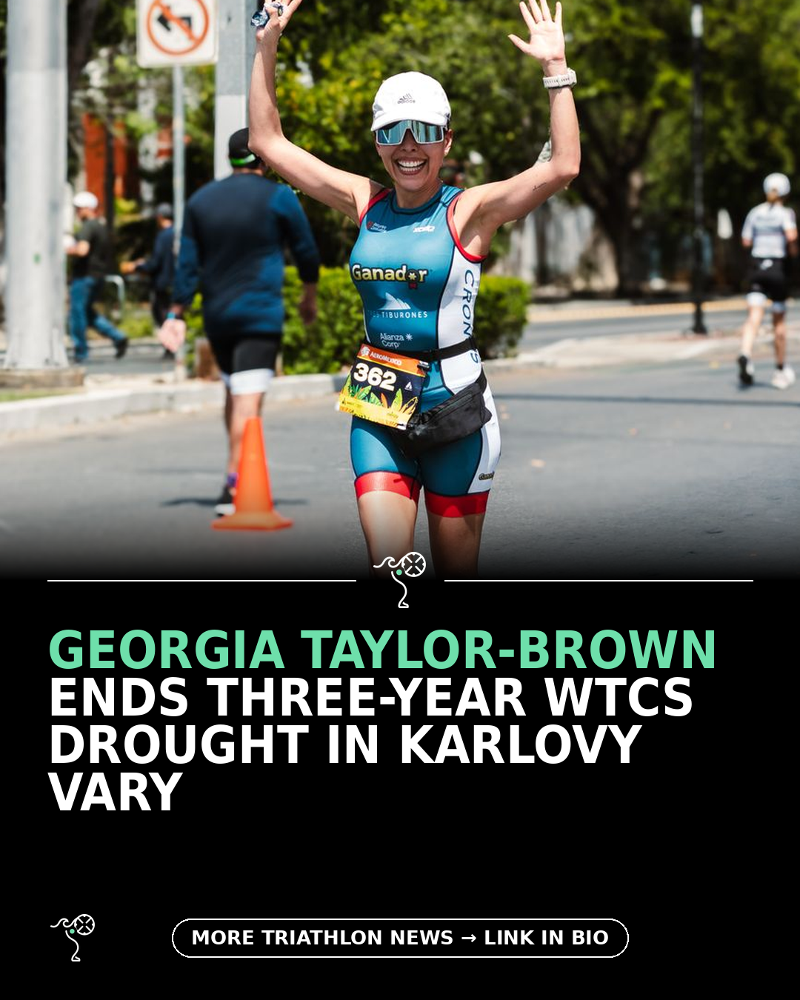

Triathlon News Daily
Monday, 14 September 2026 · generated automatically

Today's stories
- Taylor-Brown ends three-year WTCS wait as Coninx denies Yee220 Triathlon
- Nikki Bartlett wins a wet, brutal Ironman Wales for the second time220 Triathlon
- Why Ironman Wales still hits harder than any other race220 Triathlon
- Split shorts divide age-groupers but the pros keep wearing them220 Triathlon
- Twelve women's swimsuits tested by an open-water coach220 Triathlon
- My First Look at the Xero Shoes Women’s Mesa SummitBlog - A Triathlete's Diary